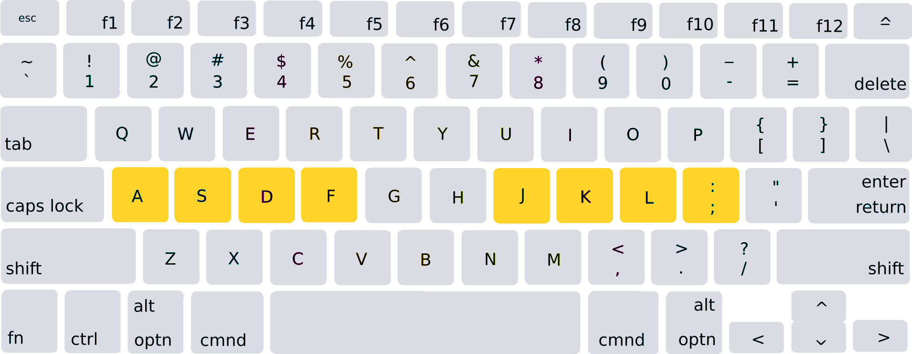

Touch Typing
Touch typing is a practice of typing with 8 - 9 fingers without looking at the keyboard, relying on muscle memory. When touch typing, your fingers must be place on a horizontal row called the Home row keys.
Home Row Keys
This is where your fingers rest when you're typing. Place your 4 left fingers on ASDF and your 4 right fingers on JKL;. There should be a raised notch on the "F" and "J" keys under your left and right index fingers.
Touch Typing Map Layout

This is the color coded keyboard to memories. Cyan: pinkie finger, blue: ring finger, magenta: middle finger, yellow/light yellow: left/right index finger.
Tips for improving Typing Speed
- Try typing without looking on your keyboard. This will help you memories all the keys you need to click.
- Focus on accuracy, go slow and try to build your muscle memory.
- When you make mistake or typo, press "ctrl" + "backspace", this will delete the entire word except for whitespace and punctuation.
Q&A
- What is WPM?
- Why I can't move to the next word?
- I can't comeback to the previous word
- The typing input doesn't work in mobile devices
Stands for "Words Per Minute", it count how many words you type in 1 minutes
When making typo, by design you have to fix your word so you can continue typing. Although I will try to improvise it so you can type seamlessly even if you're making mistake.
When you finish typing without a mistake, you will continue to the next word. This will prevent users accidentally deleting the previous word.
The logic doesn't work on virtual keyboard, I'm planning to remake the input logic, so you can try the website in mobile device.